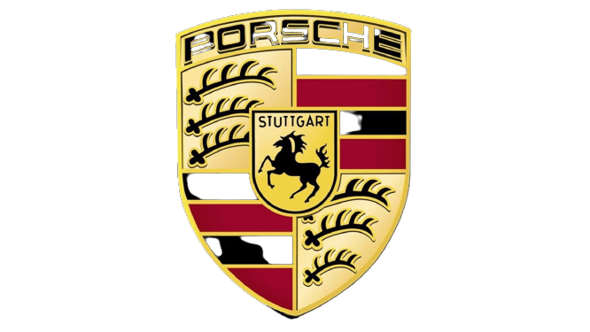

about porsche:
Shaping the future of the sportscar – this is the theme of Strategy 2025. At the heart of the strategy is our future product portfolio. The sportscar of the future will blend the history and values of the Porsche brand with innovative technologies, while at the same time ensuring sustainability. In achieving this, topics such as electromobility, digitalisation and connectivity will play an important role. Embracing these topics will allow us to shape the exclusive and sporty mobility of tomorrow. Nevertheless, with all the innovations and modifications in front of us, one thing remains constant: Anything that carries the Porsche crest will also feature the excellent quality that is synonymous with Porsche.
about me:
- this is line one
- this is second line
- this is third info
- this is final text